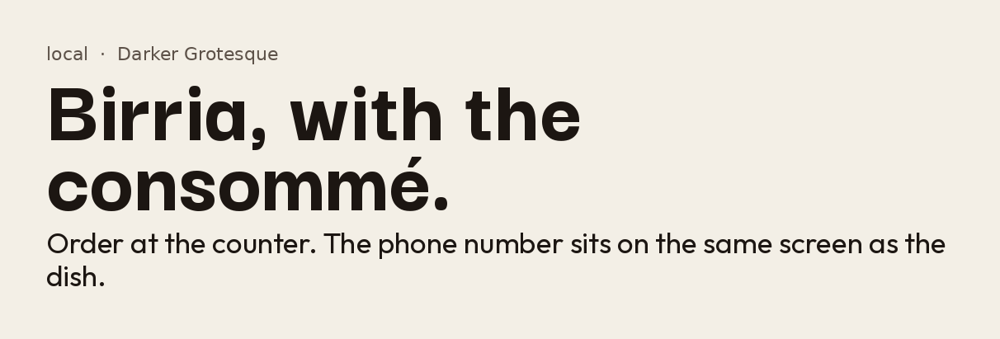

local · restaurant, taqueria, takeout, food-truck
Counter poster
Darker Grotesque is a tall Latin American grotesque, the kind of cheap-print letter a taqueria paints on the window. Outfit stays quiet so a menu can be read from a parking lot.
Used on Taco Nazo, Colonia.
- Display
- Darker Grotesque 300–900
- Body
- Outfit 100–900
- Files
- files/darker-grotesque.woff2 and files/outfit.woff2
- License
- OFL-1.1, free for paid client work
